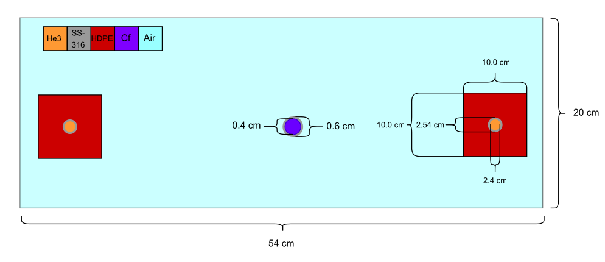
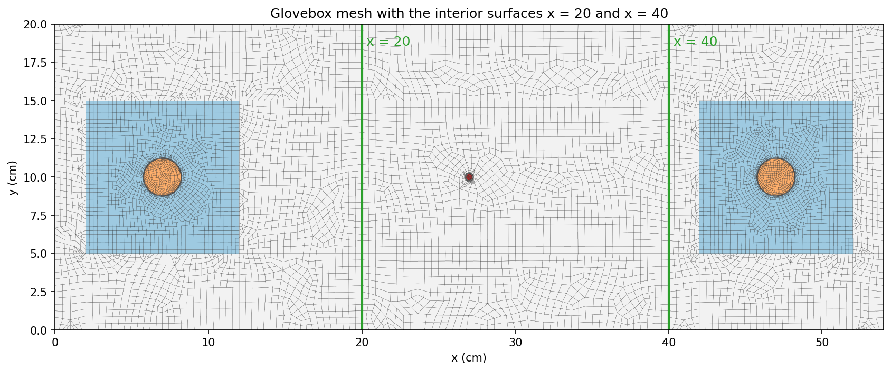

6.2.5. Detector Responses from Surface Angular Fluxes
In this example, we compute the responses of the two He-3 detectors of the glovebox examples from angular fluxes stored on interior surfaces. A forward solve and one adjoint solve per detector each write their angular flux on two planes, \(x = 20\) cm and \(x = 40\) cm, which lie between the source and the detectors. Folding the forward and adjoint surface data against each other with the ResponseEvaluator recovers each detector response without the detector volume or the forward
source, which shows where the response passes through the problem.
The following is a complete transport simulation example. Each element of the simulation can be described in the sections below:
6.2.5.1. Prerequisites
Before running this example, make sure that the Python module of OpenSn was installed.
6.2.5.1.1. Converting and Running this Notebook from the Terminal
To run this notebook from the terminal, simply type:
jupyter nbconvert --to python --execute surface_resp.ipynb.
To run this notebook in parallel (for example, using 4 processes), simply type:
mpiexec -n 4 jupyter nbconvert --to python --execute surface_resp.ipynb.
[ ]:
from mpi4py import MPI
size = MPI.COMM_WORLD.size
rank = MPI.COMM_WORLD.rank
barrier = MPI.COMM_WORLD.barrier
if rank == 0:
print(f"Running the LBS surface-response glovebox example problem with {size} MPI processors.")
6.2.5.1.2. Import Requirements
Import required classes and functions from the Python interface of OpenSn. Run this notebook from an environment where the pyopensn package is importable.
[ ]:
import os
import math
import numpy as np
from pyopensn.mesh import FromFileMeshGenerator, PETScGraphPartitioner
from pyopensn.xs import MultiGroupXS
from pyopensn.source import VolumetricSource
from pyopensn.aquad import GLCProductQuadrature2DXY
from pyopensn.solver import DiscreteOrdinatesProblem, SteadyStateSourceSolver
from pyopensn.response import ResponseEvaluator
from pyopensn.fieldfunc import FieldFunctionInterpolationVolume, \
FieldFunctionInterpolationLine, \
FieldFunctionGridBased
from pyopensn.logvol import RCCLogicalVolume
from pyopensn.context import UseColor, Finalize
6.2.5.2. Geometry
The geometry is that of the glovebox examples: a Cf-252 source encased in 0.1 cm of SS-316 at \((27, 10)\) cm, and two He-3 detectors in SS-316 sleeves, each embedded in a \(10\text{cm}\times 10\text{cm}\) block of high-density polyethylene (HDPE), at \((7, 10)\) cm (detector-1) and \((47, 10)\) cm (detector-2):

6.2.5.3. Mesh
The angular flux is written on interior surfaces made of cell faces, so the planes \(x = 20\) cm and \(x = 40\) cm must lie on cell faces. The mesh of the glovebox examples has no faces on these planes, so this example uses a mesh of the same geometry with mesh lines along both planes totaling 9,970 quadrilateral cells.
[ ]:
meshgen = FromFileMeshGenerator(
filename="glovebox.msh",
partitioner=PETScGraphPartitioner(type='parmetis'),
)
grid = meshgen.Execute()
grid.SetOrthogonalBoundaries()

6.2.5.3.1. Cross Sections
In this problem we are running a multigroup problem for the absorption reaction rate in a He-3 glovebox. This begins with importing our multigroup cross sections. In this case we will be using the WIMS69 group structure for 5 materials:
Air
SS-316
HDPE
He-3
Cf-252
Since we are importing a Gmsh mesh, material IDs are assigned to the corresponding physical group ID. Look at glovebox.msh under PhysicalNames.
[ ]:
# The WIMS69 cross sections shared by the detector-response tutorials.
xs_dir = "../../../../../../test/assets/xs/WIMS69"
xs_air = MultiGroupXS()
xs_air.LoadFromOpenSn(xs_dir+"/Air.cxs")
xs_steel = MultiGroupXS()
xs_steel.LoadFromOpenSn(xs_dir+"/SS_316.cxs")
xs_hdpe = MultiGroupXS()
xs_hdpe.LoadFromOpenSn(xs_dir+"/HDPE.cxs")
xs_he3 = MultiGroupXS()
xs_he3.LoadFromOpenSn(xs_dir+"/He3.cxs")
xs_cf = MultiGroupXS()
xs_cf.LoadFromOpenSn(xs_dir+"/Cf252.cxs")
xsecs = [{"block_ids": [1], "xs": xs_air},
{"block_ids": [2], "xs": xs_steel},
{"block_ids": [3], "xs": xs_hdpe},
{"block_ids": [4], "xs": xs_he3},
{"block_ids": [5], "xs": xs_cf}]
6.2.5.4. Solver
6.2.5.4.1. Angular Quadrature
Since we are solving a 2D problem we will create Gauss-Legendre Product Quadrature in 2D. In this case we will use 2 polar angles and 32 azimuthal angles. With polar symmetry that leaves us with 32 angles.
[ ]:
pquad = GLCProductQuadrature2DXY(n_polar=2,
n_azimuthal=32,
scattering_order=0)
6.2.5.4.2. Group Structure
Since we are using the WIMS69 group structure, we define a groupset block with 69 energy groups.
[ ]:
num_groups = 69
grpsets = [
{
"groups_from_to": (0, num_groups-1),
"angular_quadrature": pquad,
"inner_linear_method": "petsc_gmres",
"l_abs_tol": 1.0e-10,
"l_max_its": 500,
"gmres_restart_interval": 100,
},
]
6.2.5.4.3. Detectors
The two detectors are cylindrical logical volumes of He-3. Their absorption cross section \(\sigma_a^{\text{He3},g}\) is the response function, used as the adjoint source. Each detector computed costs one adjoint solve, so this example computes detector-1 only; setting detectors = [1, 2] also computes detector-2, whose results are included in the Results tables.
[ ]:
det1 = [7.0, 10.0, 0.0]
det2 = [47.0, 10.0, 0.0]
dets = [det1, det2]
det_logvols = []
for det in dets:
r_he3 = 1.2
he3 = RCCLogicalVolume(
r=r_he3,
x0=det[0], y0=det[1],
z0=-2.0, vz= 2.0
)
det_logvols.append(he3)
# Detectors to compute. [1, 2] also computes detector-2, as in the Results tables.
detectors = [1]
6.2.5.4.4. Forward Solve
The forward source is a uniform energy spectrum distributed over the Cf-252 region (material ID 5), specified per unit area.
[ ]:
groups = np.flip([1.00000E-11, 5.00000E-09, 1.00000E-08, 1.50000E-08, 2.00000E-08,
2.50000E-08, 3.00000E-08, 3.50000E-08, 4.20000E-08, 5.00000E-08,
5.80000E-08, 6.70000E-08, 8.00000E-08, 1.00000E-07, 1.40000E-07,
1.80000E-07, 2.20000E-07, 2.50000E-07, 2.80000E-07, 3.00000E-07,
3.20000E-07, 3.50000E-07, 4.00000E-07, 5.00000E-07, 6.25000E-07,
7.80000E-07, 8.50000E-07, 9.10000E-07, 9.50000E-07, 9.72000E-07,
9.96000E-07, 1.02000E-06, 1.04500E-06, 1.07100E-06, 1.09700E-06,
1.12300E-06, 1.15000E-06, 1.30000E-06, 1.50000E-06, 2.10000E-06,
2.60000E-06, 3.30000E-06, 4.00000E-06, 9.87700E-06, 1.59680E-05,
2.77000E-05, 4.80520E-05, 7.55014E-05, 1.48729E-04, 3.67263E-04,
9.06899E-04, 1.42510E-03, 2.23945E-03, 3.51910E-03, 5.53000E-03,
9.11800E-03, 1.50300E-02, 2.47800E-02, 4.08500E-02, 6.73400E-02,
1.11000E-01, 1.83000E-01, 3.02500E-01, 5.00000E-01, 8.21000E-01,
1.35300E+00, 2.23100E+00, 3.67900E+00, 6.06550E+00, 1.00000E+01])
group_width = -np.diff(groups)
dE = groups[0] - groups[-1]
dA = np.pi*0.2*0.2
Q = (group_width / dE / dA).tolist()
fwd_vol_src = VolumetricSource(block_ids=[5], group_strength=Q)
fwd_src = {'material': [{'block_id': 5, 'strength': Q}]}
The problem saves the angular flux, which WriteSurfaceAngularFluxes needs.
[ ]:
phys = DiscreteOrdinatesProblem(
mesh=grid,
num_groups=num_groups,
groupsets=grpsets,
xs_map=xsecs,
volumetric_sources=[fwd_vol_src],
boundary_conditions=[
{"name": "xmin", "type": "vacuum"},
{"name": "xmax", "type": "vacuum"},
{"name": "ymin", "type": "vacuum"},
{"name": "ymax", "type": "vacuum"},
],
options={"save_angular_flux": True},
)
ss_solver = SteadyStateSourceSolver(problem=phys)
ss_solver.Initialize()
ss_solver.Execute()
For reference, the forward response of each detector is its absorption rate, \(\sum_g \sigma_a^{\text{He3},g} \int_{V_d} \phi^g \, d^2r\).
[ ]:
fflist = phys.GetScalarFluxFieldFunction(only_scalar_flux=False)
sig_a = np.array(xs_he3.sigma_a)
fwd_resp = {}
for d in detectors:
rate = 0.0
for g in range(num_groups):
ffi = FieldFunctionInterpolationVolume()
ffi.SetOperationType("sum")
ffi.SetLogicalVolume(det_logvols[d - 1])
ffi.AddFieldFunction(fflist[g][0])
ffi.Execute()
rate += sig_a[g] * ffi.GetValue()
fwd_resp[d] = rate
The forward angular flux is then written on the two planes with WriteSurfaceAngularFluxes. Each plane is stored under two tags, one per side: x20_u holds the faces whose outward normal points in the \(+x\) direction (the cells left of the plane), and x20_d the faces whose outward normal points in the \(-x\) direction (the cells right of the plane).
[ ]:
data_dir = "Data"
os.makedirs(data_dir, exist_ok=True)
surfaces = {"x20": ("x", 20.0), "x40": ("x", 40.0)}
phys.WriteSurfaceAngularFluxes(data_dir + "/fwd_surf_p", interior_surfaces=surfaces)
6.2.5.4.5. Adjoint Solves
The same problem is switched to adjoint mode and solved once per detector, with the detector’s He-3 absorption cross section as the adjoint source over its volume. clear_volumetric_sources=True replaces the previous detector’s source, which would otherwise remain and add to the new one. Each adjoint solve writes its flux moments, for the volumetric response, and its angular flux on the same two planes.
[ ]:
phys.SetAdjoint(True)
Q_adj = xs_he3.sigma_a.tolist()
for d in detectors:
adj_src = VolumetricSource(logical_volume=det_logvols[d - 1], group_strength=Q_adj)
# Replace the previous detector's source; by default the new sources are added to it.
phys.SetVolumetricSources(clear_volumetric_sources=True, volumetric_sources=[adj_src])
ss_solver.Execute()
phys.WriteFluxMoments(f"{data_dir}/adjphi_det{d}_p")
phys.WriteSurfaceAngularFluxes(f"{data_dir}/adj_surf_det{d}_p", interior_surfaces=surfaces)
6.2.5.5. Post Processing
6.2.5.5.1. Volumetric Responses
The ResponseEvaluator folds the forward source against the adjoint flux moments of each detector:
The surface data sets are added in the same call. A surface name such as x20 reads both stored sides of the plane.
[ ]:
def surface_data(name, prefix, tags):
return {"name": name, "file_prefixes": {"surface_angular_fluxes": prefix}, "surfaces": tags}
data = [surface_data("forward", data_dir + "/fwd_surf_p", ["x20", "x40"])]
for d in detectors:
data += [{"name": f"detector{d}", "file_prefixes": {"flux_moments": f"{data_dir}/adjphi_det{d}_p"}},
surface_data(f"adjoint{d}", f"{data_dir}/adj_surf_det{d}_p", ["x20", "x40"])]
evaluator = ResponseEvaluator(problem=phys)
evaluator.SetOptions(data=data, sources=fwd_src)
adj_resp = {d: evaluator.EvaluateResponse(f"detector{d}") for d in detectors}
6.2.5.5.2. Surface Responses
For a surface \(S\) with faces \(f\), the surface response is
with \(\mu_{f,d} = \Omega_d \cdot n_f\), \(w_d\) the quadrature weight, \(M_{f,ij}\) the face mass matrix, and \(\psi\) and \(\psi^\dagger\) the forward and adjoint angular fluxes. For a plane, \(D_f\) holds every direction: the forward flux is taken from the side upwind of \(\Omega_d\), the side it leaves, and the adjoint flux from the downwind side, which is upwind for the adjoint.
6.2.5.5.2.1. Choosing the normal
The sign of \(R\) depends on the normal \(n_f\). The surfaces passed to EvaluateSurfaceResponse name it by a side’s tag: x20_u (or the bare x20) measures along the \(+x\) normal of the _u side, and x20_d along the \(-x\) normal of the _d side, which gives the same response with the opposite sign. A plane that separates the source from a detector carries that detector’s response when \(n_f\) points from the source side to the detector side, and its
negative when it points the other way. So the rule is to name the side the source is on. The source at \(x = 27\) cm lies on the _d side of \(x = 20\) and on the _u side of \(x = 40\), so both detectors use x20_d and x40_u:
for detector-1, at \(x = 7\) cm, \(x = 20\) separates the source from the detector and
x20_dmeasures toward the detector, while the barex20would give the negative of its response;for detector-2, at \(x = 47\) cm, \(x = 40\) separates the source from the detector and
x40_umeasures toward the detector;a plane that does not separate the source from a detector gives zero, because everything it carries toward the detector also returns across it.
Both planes together, surfaces=["x20_d", "x40_u"], enclose the source between the vacuum boundaries \(y = 0\) and \(y = 20\) cm, so their sum gives the response of either detector.
6.2.5.5.2.2. Outgoing and incoming parts
EvaluateSurfaceResponse returns, for each surface, a dictionary with the outgoing part, the directions with \(\mu_{f,d} > 0\), which cross along the normal, the incoming part, the directions with \(\mu_{f,d} < 0\), which cross back, and their sum, the total \(R\). For x20 measured along \(+x\), outgoing is the part of the response carried across the plane in the \(+x\) direction and -incoming the part carried in the \(-x\) direction; measured
along \(-x\), as x20_d, the two parts swap and change sign.
Below, each plane is evaluated along \(+x\) for its two parts and from the source side for its total, and the totals of both source-side planes are summed.
[ ]:
# The tag of the side of each plane the source (x = 27 cm) is on.
source_side = {"x20": "x20_d", "x40": "x40_u"}
# The plane that separates the source from each detector.
separating = {1: "x20", 2: "x40"}
surf_resp = {}
for d in detectors:
# Along +x, the +x part of a plane is its outgoing part and the -x part minus its incoming part.
along_x = evaluator.EvaluateSurfaceResponse("forward", f"adjoint{d}", surfaces=["x20", "x40"])
# Measured from the source side, the total is the response carried toward the detector.
from_source = evaluator.EvaluateSurfaceResponse(
"forward", f"adjoint{d}", surfaces=list(source_side.values()))
for s in ("x20", "x40"):
full = from_source[source_side[s]]["total"]
plus = along_x[s]["outgoing"]
minus = -along_x[s]["incoming"]
surf_resp[(d, s)] = (full, plus, minus)
surf_resp[(d, "both")] = sum(response["total"] for response in from_source.values())
# The bare name measures along +x for comparison.
surf_resp[(d, "x20 along +x")] = along_x["x20"]["total"]
if rank == 0:
for d in detectors:
qoi = adj_resp[d]
print(f"Detector-{d} forward QoI={fwd_resp[d]:.6e}")
print(f"Detector-{d} adjoint QoI={qoi:.6e}")
for s in ("x20", "x40"):
full, plus, minus = surf_resp[(d, s)]
print(f"Detector-{d} {source_side[s]} surface QoI={full:.6e}")
print(f"Detector-{d} {s} +x part={plus:.6e}")
print(f"Detector-{d} {s} -x part={minus:.6e}")
print(f"Detector-{d} x20 along +x QoI={surf_resp[(d, 'x20 along +x')]:.6e}")
print(f"Detector-{d} both-plane QoI={surf_resp[(d, 'both')]:.6e}")
# Relative differences from the adjoint QoI: the forward QoI, the separating plane, both
# planes, and the other plane, which should carry no response.
other = "x40" if separating[d] == "x20" else "x20"
print(f"Detector-{d} forward-adjoint difference={abs(fwd_resp[d] / qoi - 1.0):.3e}")
print(f"Detector-{d} separating-plane difference="
f"{abs(surf_resp[(d, separating[d])][0] / qoi - 1.0):.3e}")
print(f"Detector-{d} both-plane difference={abs(surf_resp[(d, 'both')] / qoi - 1.0):.3e}")
print(f"Detector-{d} non-separating fraction={abs(surf_resp[(d, other)][0] / qoi):.3e}")
6.2.5.6. Results
On 8 ranks the example prints the detector-1 column below; the detector-2 column is printed with detectors = [1, 2]:
Detector-1 (\(x = 7\) cm) |
Detector-2 (\(x = 47\) cm) |
|
|---|---|---|
Forward QoI |
4.415711e-03 |
4.412902e-03 |
Adjoint QoI |
4.415711e-03 |
4.412903e-03 |
|
4.415711e-03 |
-8.6e-12 |
|
1.507136e-05 / 4.430783e-03 |
2.261069e-04 / 2.261069e-04 |
|
-1.3e-11 |
4.412903e-03 |
|
2.250146e-04 / 2.250146e-04 |
4.428261e-03 / 1.535832e-05 |
|
-4.415711e-03 |
8.6e-12 |
|
4.415711e-03 |
4.412903e-03 |
Volumetric responses. The forward and adjoint responses agree to \(2 \times 10^{-8}\) relative for detector-1 and \(2 \times 10^{-7}\) for detector-2. They differ only by the iteration error of the two solves, which shrinks as
l_abs_tolis tightened: withl_abs_tol= \(10^{-9}\) the detector-1 difference is \(2 \times 10^{-6}\).Separating planes. The plane between the source and each detector,
x20_dfor detector-1 andx40_ufor detector-2, reproduces the adjoint response to \(3 \times 10^{-9}\) relative. The surface identity is exact for the discretization, so the difference is the iteration error of the solves: it is \(3 \times 10^{-8}\) withl_abs_tol= \(10^{-9}\).Choosing the normal. Measured along \(+x\) with the bare name
x20, detector-1’s response is \(-4.415711 \times 10^{-3}\): the same value with the opposite sign, because \(+x\) points from detector-1 toward the source. Naming the source side,x20_d, measures toward the detector and gives the positive response.Non-separating planes. The plane on the far side of the source from a detector carries no net response, less than \(3 \times 10^{-9}\) of the QoI. Its \(+x\) and \(-x\) parts are each about 5% of the QoI and cancel: a particle that crosses it away from the detector can only score after crossing back.
Outgoing and incoming parts. Across each separating plane, almost all of the response is carried toward the detector, \(4.431 \times 10^{-3}\) for detector-1, and a small part, \(1.5 \times 10^{-5}\), is carried away from it by particles that cross back to the source side and later return to the detector. The total response is their difference.
Both planes. Together the two source-side planes enclose the source between the vacuum boundaries, so evaluating both in one call gives the response of either detector without knowing where it is.
6.2.5.7. Finalize (for Jupyter Notebook only)
In Python script mode, PyOpenSn automatically handles environment termination. However, this automatic finalization does not occur when running in a Jupyter notebook, so explicit finalization of the environment at the end of the notebook is required. Do not call the finalization in Python script mode, or in console mode.
Note that PyOpenSn’s finalization must be called before MPI’s finalization.
[ ]:
from IPython import get_ipython
def finalize_env():
Finalize()
MPI.Finalize()
ipython_instance = get_ipython()
if ipython_instance is not None:
ipython_instance.events.register("post_execute", finalize_env)
os.system("rm -rf Data")